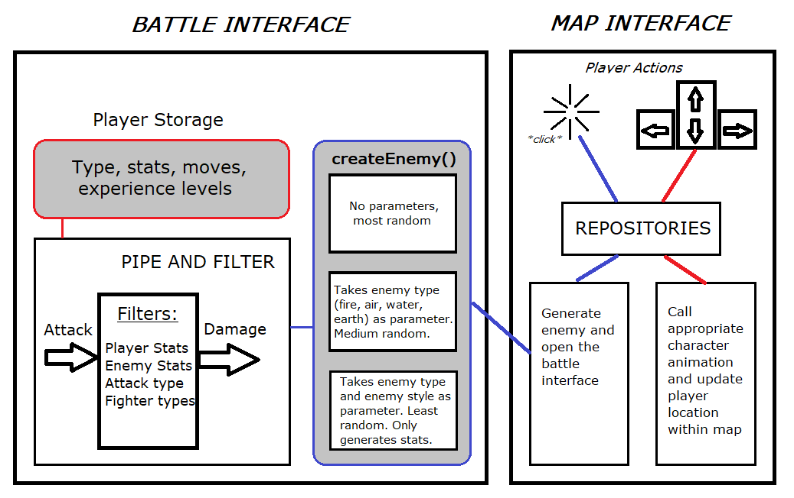

Theo Platt
Avery Lee
Devin Thaker
Maximino Robles
This project will be a turn-based combat system in which players can fight Non-Playable Characters. It will include a variety of players stats (such as health, speed, evasiveness, and accuracy) as well as different moves that can heal the player, attack the opponent, or manipulate stats. It will have a simple navigation system which leads the player into our pokemon-style combat encounters.
We need our system to:
1. Have a turn-based battle system
2. Have a map/world to transition between battles
All other requirements fall under these two categories, so we decided to base our architecture designs off these key points.
For the battle system, we will implement a pipe and filter architecture style. The input will be the moves chosen by the fighters in the battle. The move will be modified using filters such as player stats, opponent stats, fighter types, and attack type. Ultimately, all of this information combined will output as total damage dealt.
For our map, we will use a repository architecture style. The map will act as the data store. Our player character will be the component that reads the data from the map and updates it depending on where the user goes.

We will be using the pipe and filter architecture design to moderate our battles, and the repository architecture design to implement our map.
One possible issue is that neither architecture works with storing player information. We want the players’ stats, attacks, and experience to be saved between battles, so we would have to find another way to store that data.
A question that we have is, how we should connect the two architecture designs together so that they work together?